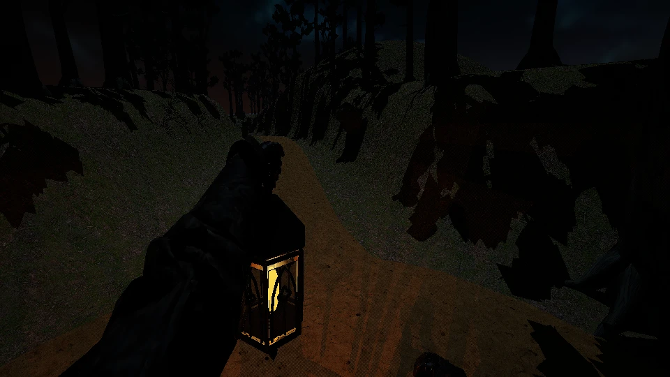
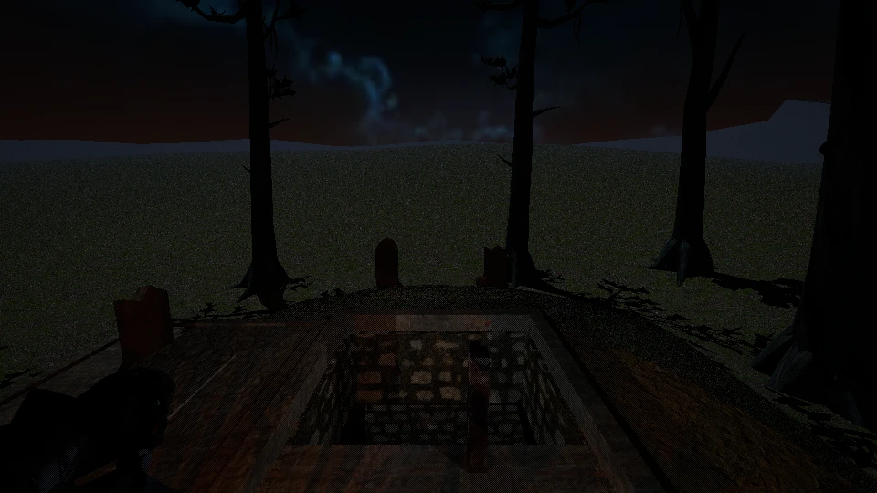
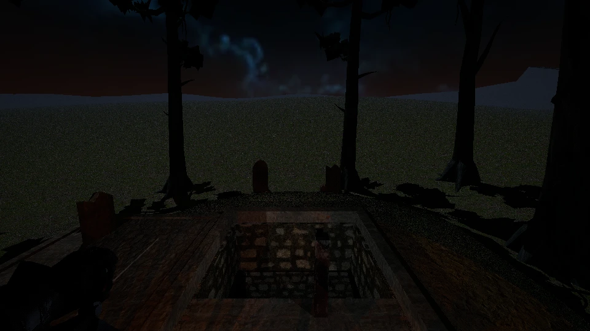
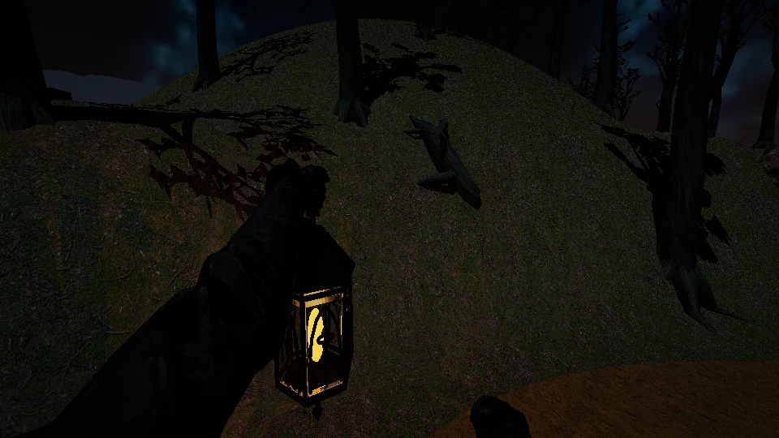
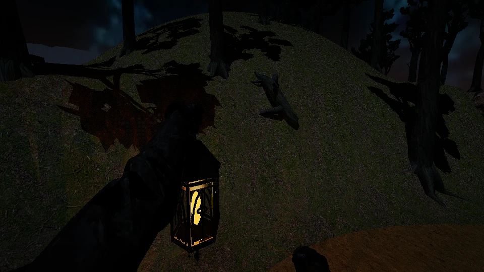
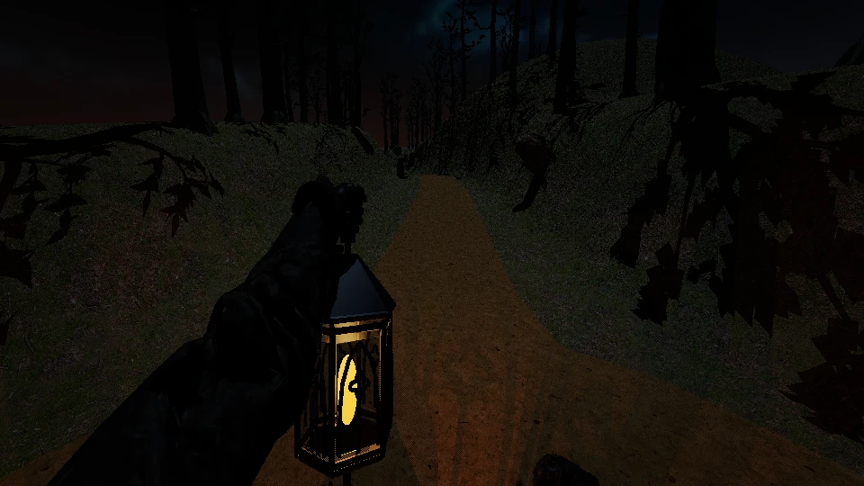
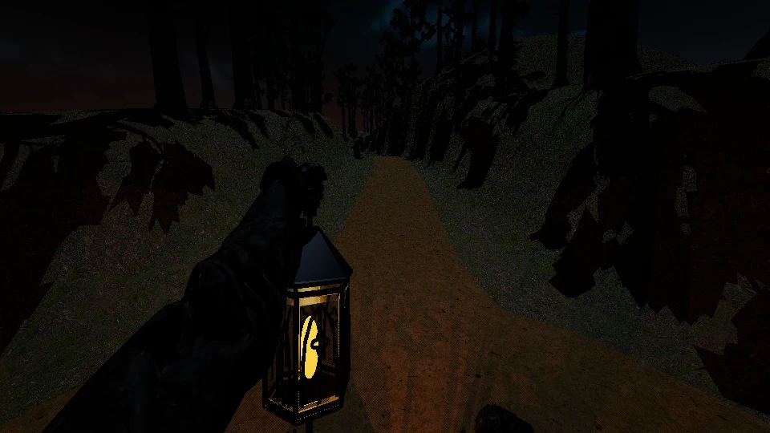
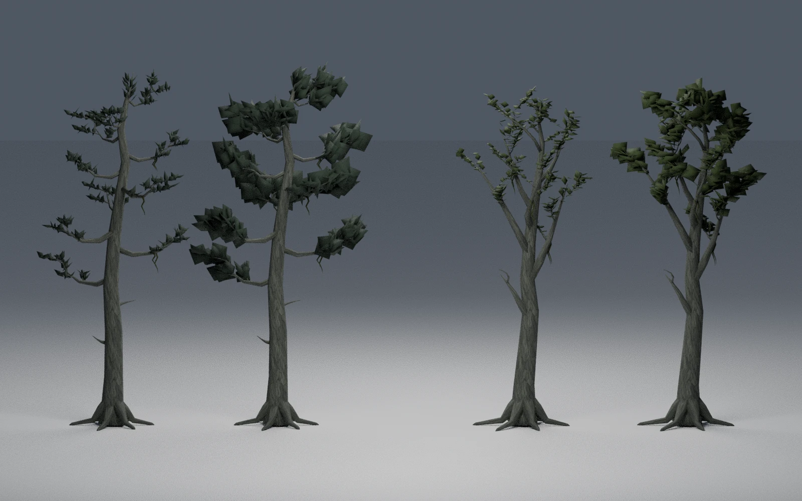
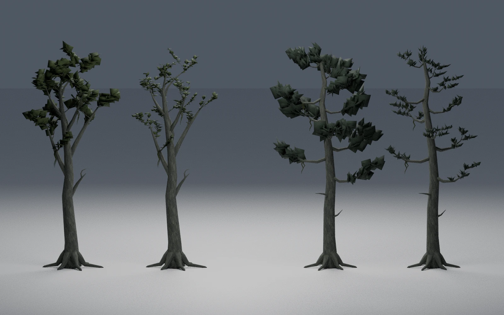

Actual native RT route readbacks; WebP viewing derivatives. Bare middle distance remains; oversized near fans. Production unchanged. Evidence and limitations







Front: pine control/candidate, then alder control/candidate. Back reverses their left-to-right order. Blender Cycles, unchanged source lighting.

